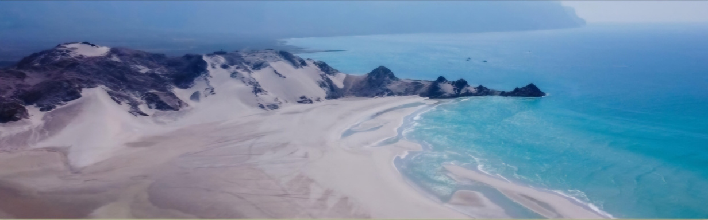
هذه ليست مجرد رحلة، إنها رحلة إلى كوكب آخر مليء بالعجائب الطبيعية النادرة، بإرشاد محلي سقطري وتخييم تحت سماء النجوم.
8 أيام / 7 ليالٍ
تخييم شاطئي وجبلي مجهز
دفع رباعي 4x4 خاص
أكتوبر إلى مايو
الوصول إلى مطار سقطرى واستقبالكم من قبل مرشدكم السقطري المحلي. التوجه إلى قلنسية، ثاني أكبر مدينة بالجزيرة، لتناول الغداء عند دتوة، ثم استكشاف البحيرة الكبيرة الشهيرة برمالها البيضاء وسلاحفها البحرية وأسماك اللسع. توقف لالتقاط صور عند الدبابات الروسية في قرية علمه بالطريق. مشاهدة غروب سقطرى الساحر. العشاء والمبيت في مخيم بحيرة دتوة.

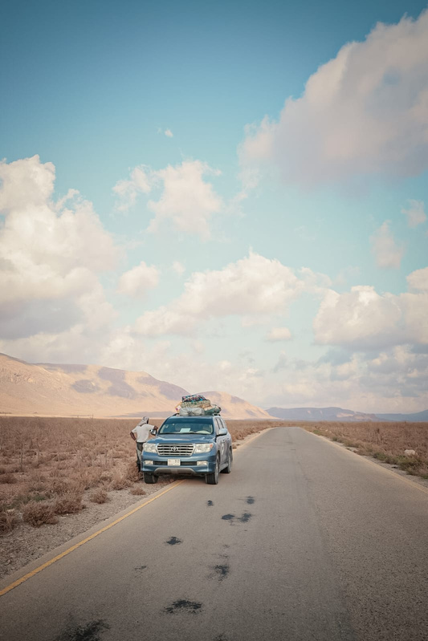
رحلة بحرية مبكرة بالقارب إلى شاطئ شعب مع مشاهدة الدلافين الدوارة وصيد الأسماك بالخيط. استرخاء على أنقى الشواطئ الرملية البيضاء في الجزيرة. العودة إلى دتوة للغداء، ثم لقاء 'رجل الكهف' بعد العصر ليريكم أسرار البحيرة (المحار، الحبار، وأسماك اللسع). العشاء والمبيت في دتوة.
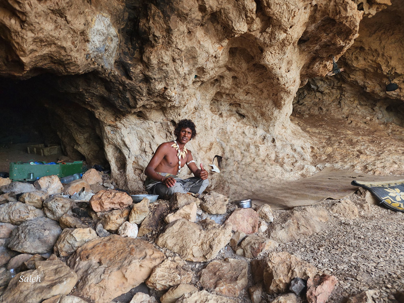
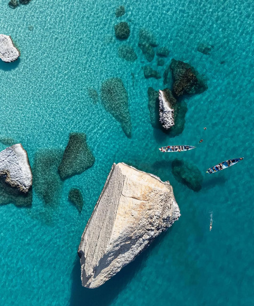
التوجه إلى هضبة دكسم، قلب سقطرى وموطن البدو الرحّل، والتوقف عند إطلالة شبهون على الوادي. الغداء في وادي درهور. بعد الغداء، مسير وسط غابة فرمهين لأشجار دم الأخوين الشهيرة. جلسة شاي تقليدية مع السكان المحليين والتعرف على كيفية استخراج راتنج دم الأخوين واستخداماته. المبيت والتخييم وسط أشجار دم الأخوين.
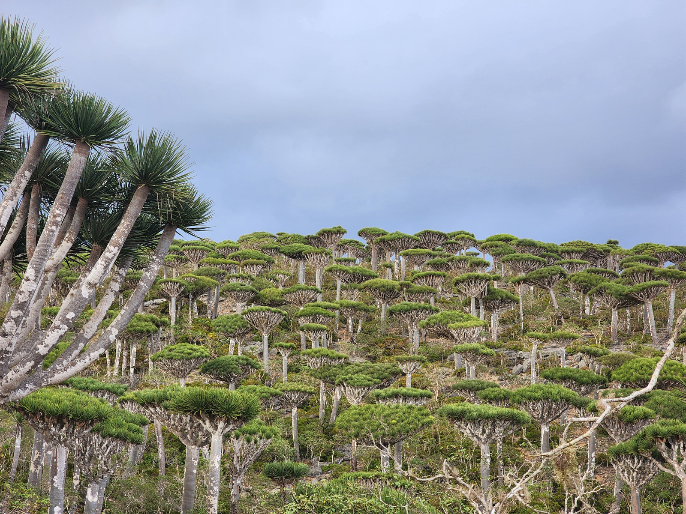
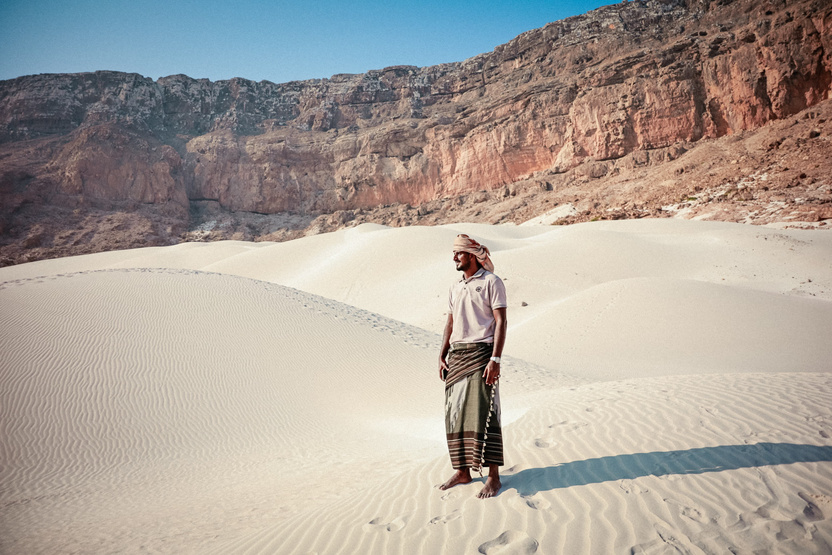
التوجه جنوباً إلى كهف دقوب المطل على القرى الجنوبية. الاسترخاء وتناول الغداء في شاطئ عُمق على المحيط الهندي. في العصر، التوجه إلى كثبان زاهق الرملية البيضاء الشاسعة والاستمتاع بمشهد الغروب الساحر من فوق الكثبان.
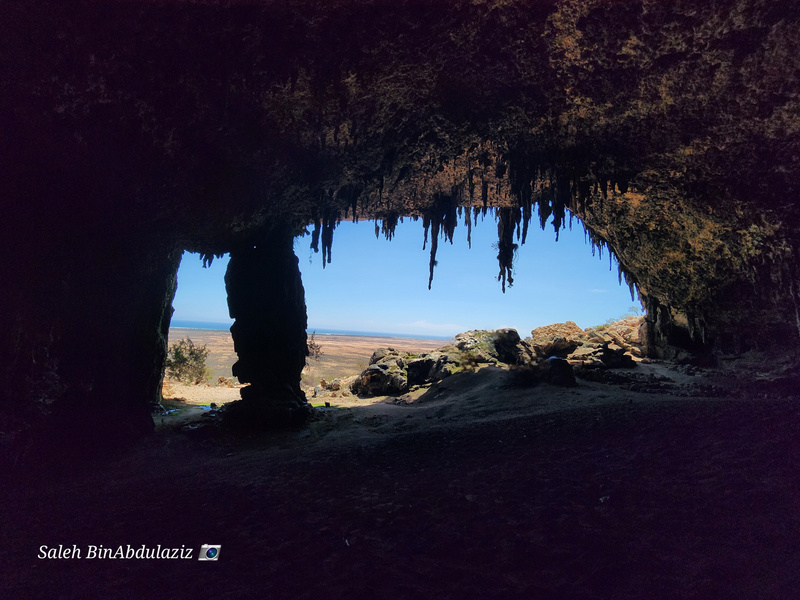
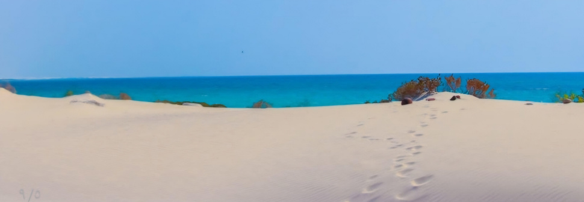
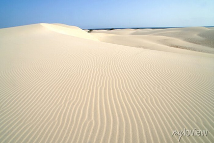
رحلة إلى هضبة مومي لزيارة وادي كليسان، أحد أروع الأودية المائية والبرك الزمردية المحاطة بالجروف الكلسية وأشجار الزجاجة ذات الأزهار الوردية. الغداء نزهة يعده فريقنا المحلي. ثم التوجه إلى شاطئ أرهر حيث تلتقي الجروف العالية بكثبان رملية بيضاء وينابيع عذبة تصب في البحر. العشاء والمبيت في مخيم أرهر.
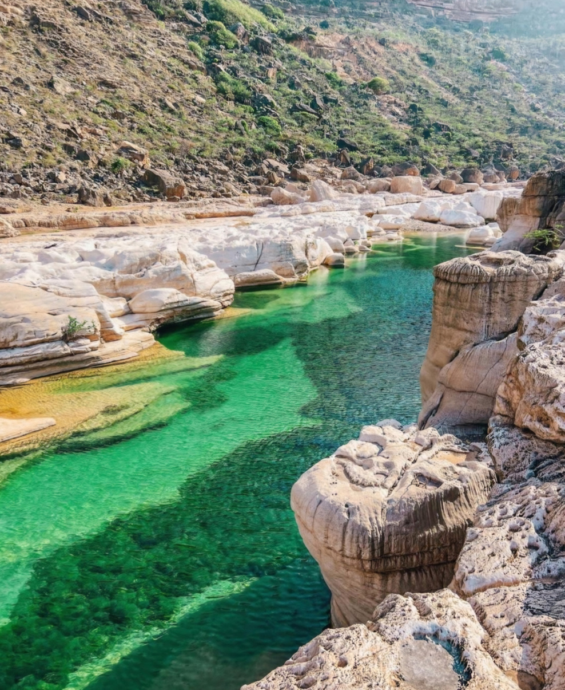
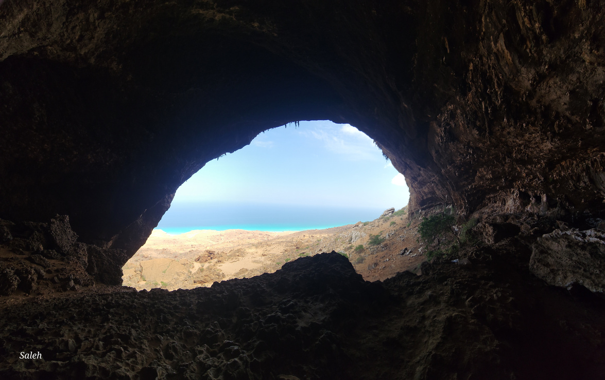
استيقاظ مبكر عند 4:00 فجراً لصعود كثبان أرهر ومشاهدة الشروق الأسطوري. مسير لمدة 4 ساعات ذهاباً وإياباً لاستكشاف كهف حوق الممتد بعمق يزيد عن 3.5 كم من الصواعد والهوابط والكتابات القديمة. الغداء في مخيم أرهر، ثم زيارة رأس إريسال، أقصى نقطة شرقية حيث يلتقي بحر العرب بالمحيط الهندي وزيارة القرية المحلية. العشاء والمبيت في أرهر.
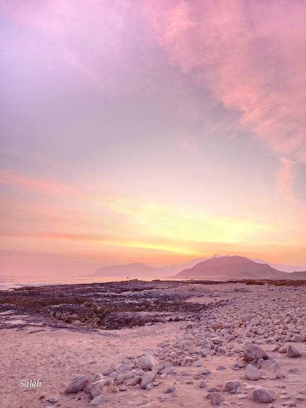
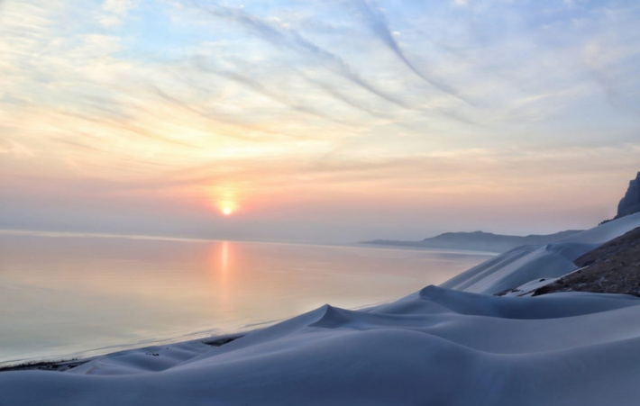

زيارة متنزه حُمهيل الوطني الشهير بأشجار اللبان ودم الأخوين، والوصول إلى 'البركة اللامتناهية الطبيعية' المطلة على الساحل الشمالي بمياهها الكريستالية. الغداء في واحة قارية النخيلية، ثم التوجه إلى محمية دهمري البحرية للغطس والسنوركلينج بين الشعاب المرجانية والسلاحف والأسماك النادرة. العشاء والمبيت في دليشة (أو فندق حسب الرغبة).
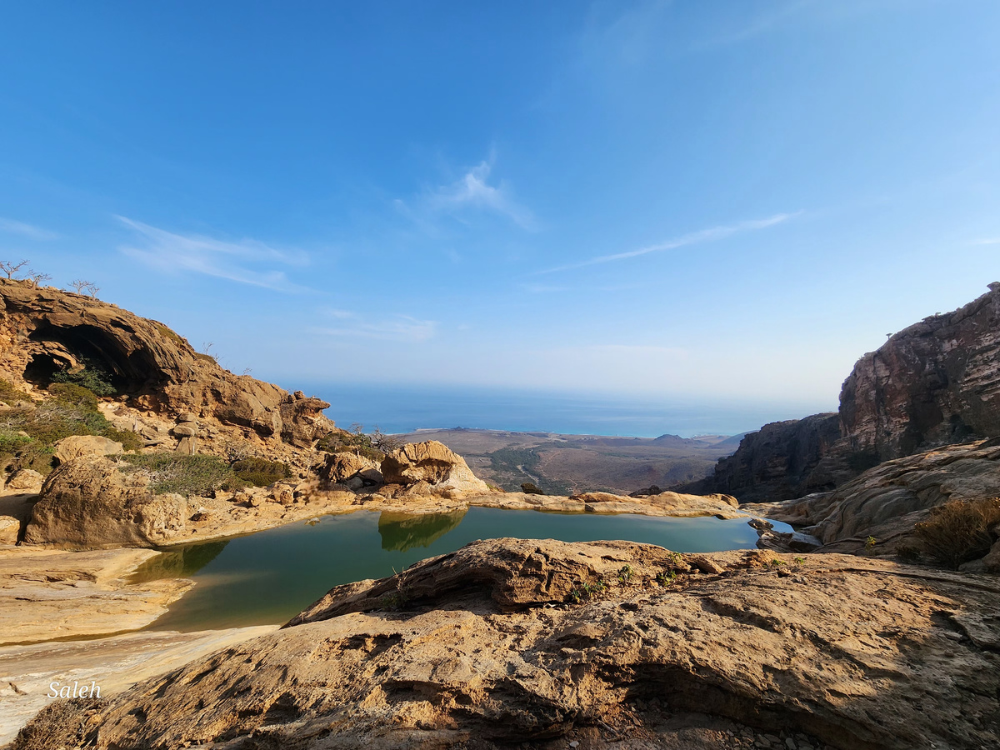
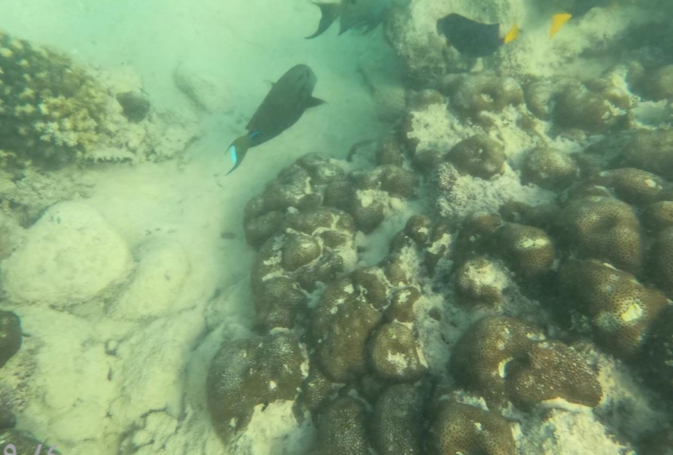
تناول إفطار سقطري أخير، ثم يوصلكم المرشد إلى مطار سقطرى لرحلة العودة، وتغادرون الجزيرة بكاميرا مليئة بالصور وروح مفعمة بأجمل الذكريات.
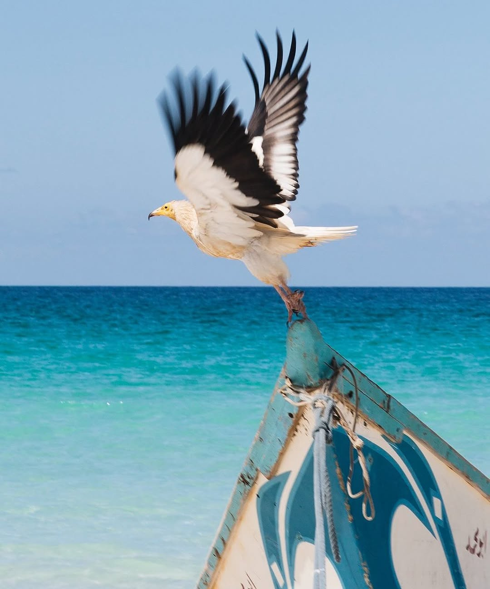